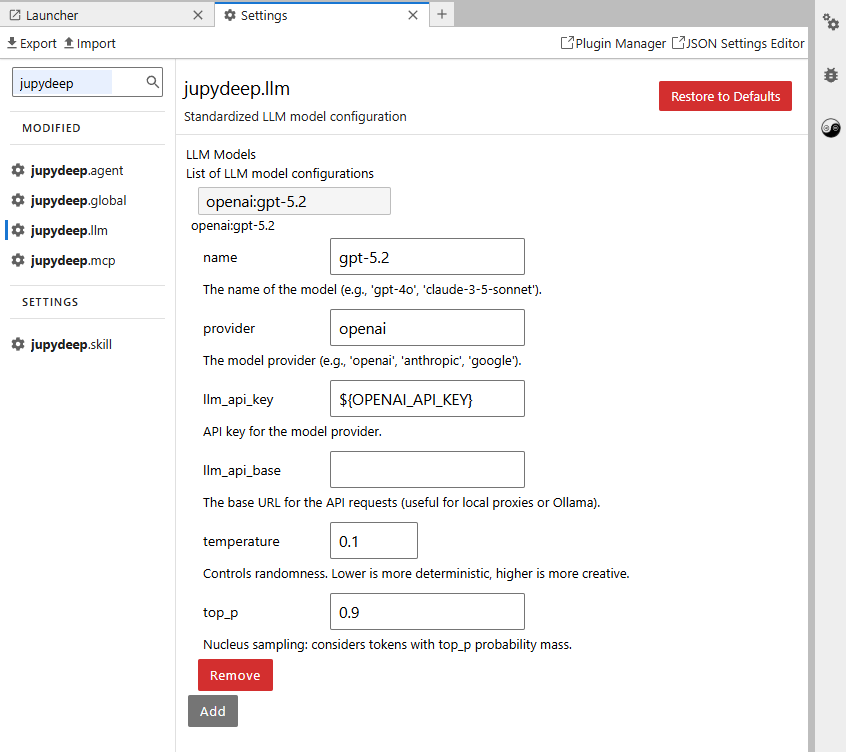
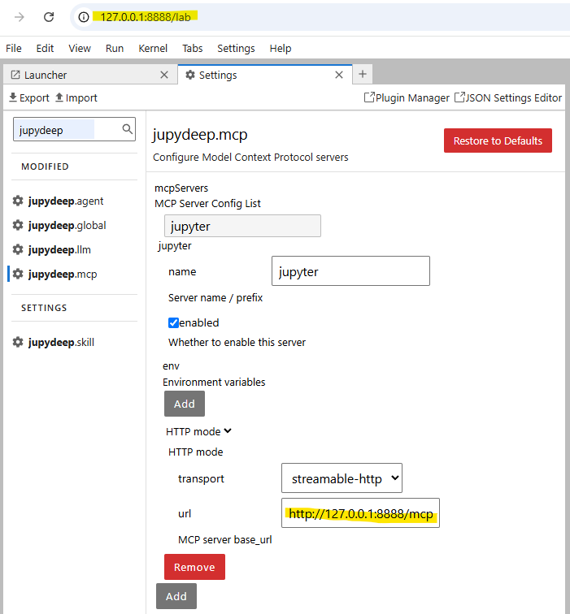
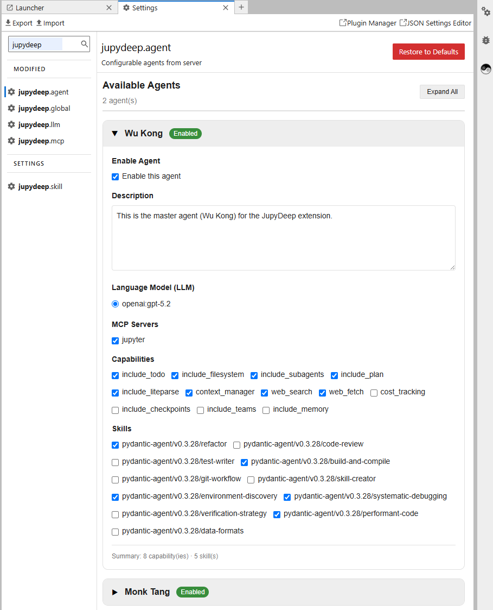
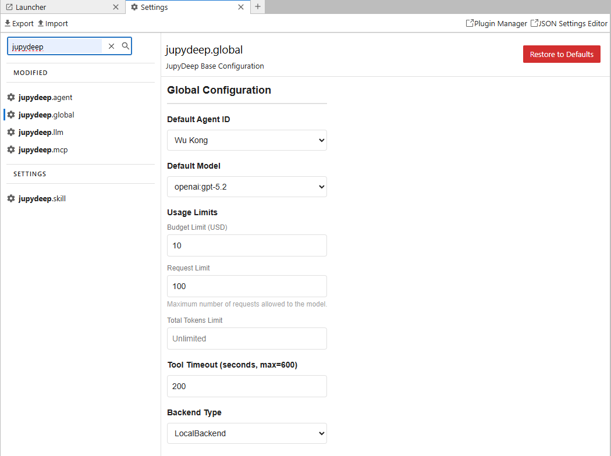

User Guide
Getting Started
After installing JupyDeep for the first time, you’ll need to configure a few settings to get the engine running:
1. Locate Settings
Open the JupyterLab Settings Editor and search for options prefixed with jupydeep.
2. Configure Your LLM
The agent engine requires an LLM backend to function. Set up your model provider (e.g., OpenAI) by following the configurations below (Required).
{kind=link}

Note
While OpenAI is used here as an example, any other supported LLM provider you have access to will work perfectly.
Please refer to the available models listed in the Pydantic AI (KnownModelName Section).
You can also configure local proxies—such as Ollama running on your local machine or network.
3. Configure Your MCP
To maximize productivity within the Jupyter workspace, it is highly recommended to configure the Jupyter MCP using the guidelines below (Recommended).
{kind=link}

Warning
Ensure the URL prefix and port match those in your browser’s address bar.
4. Meet Your Built-in Agents
Once your LLM is connected, two default agents will instantly populate your jupydeep.agent panel.
{kind=link}

🐵 Wu Kong: Built for heavy-lifting code execution and technical problem-solving.
🐴 Monk Tang: Built for high-level tactical planning and orchestration.
Tip
You can easily customize their skillsets and capabilities to fit your needs. If the agents do not appear, try refreshing the page.
5. Global Setting
This section primary configures the global behavior of the engine and agents. This includes settings for the default agent and model, token usage limits, tool-call timeouts, and backend configurations.
{kind=link}

Warning
Some of these parameters are currently placeholders and have not been implemented yet.